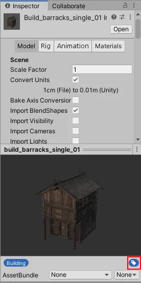
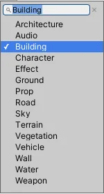

Use text labels to group assets into categories. You can assign more than one label to each asset and create custom labels.
To add a label to an asset:
Open the asset in the Inspector window.
In the Preview panel, select the label icon.

Tip: If the Preview panel is minimized, drag the title bar up to expand it.
In the labels menu, select a label to apply it or select it again to remove it. The menu lists every label in the project; labels already applied to the asset show a check mark next to them.

To create a new label and assign it:
Type the label name in the menu text box.
Press Space or Enter.
You can then toggle the new label like any other entry in the menu.
To remove a label, open the label menu and select the label again to clear the check mark.
Use labels to filter assets in the Project window. Choosing a label starts a search that uses the l: token. For more information about textual searches, refer to Search expressions.
To filter by label:
The Project window shows results grouped by location: All, In Packages, In Assets, and under the folder you currently have selected.
You can use the l: search token in the Advanced Object Picker and Search windows. You can also select labels in the Visual query builder in both windows.
To retrieve an asset’s labels in code, call AssetDatabase.GetLabels.